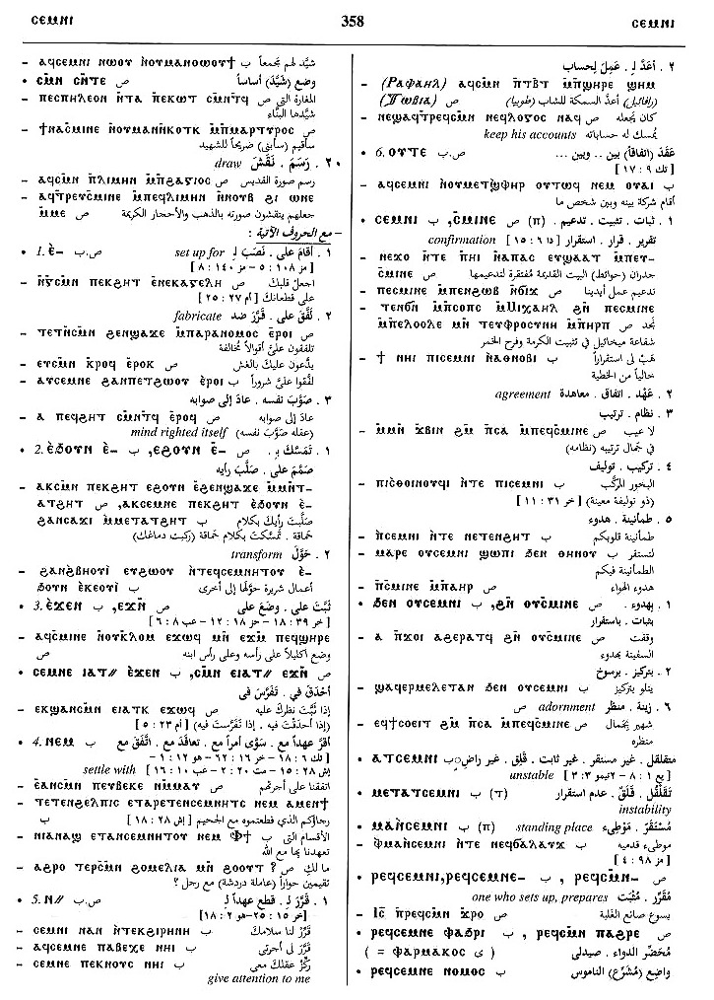
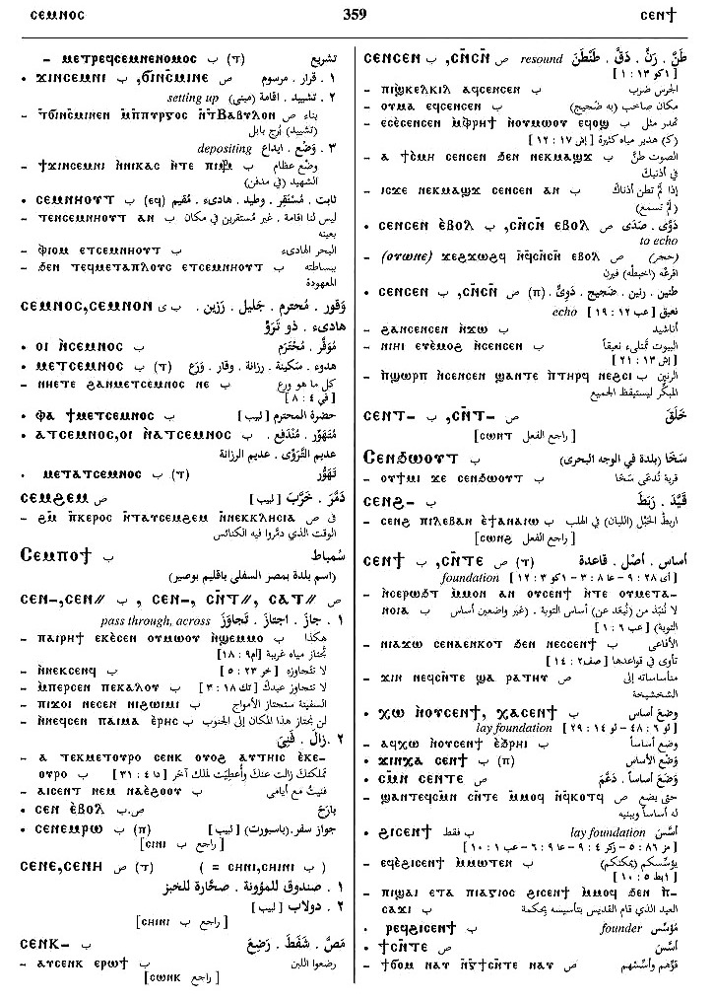

(verb)
intr: be established, set right, in order [ισταναι, τιθεσθαι, ορθουσθαι]
qual: [μενειν]
tr:
― establish, construct, set right [στηριζειν]
― compose, write book
― provide, pay for book
― set up, construct building
qual: [μενειν]
tr:
― establish, construct, set right [στηριζειν]
― compose, write book
― provide, pay for book
― set up, construct building
(S, A)
ⲥⲙⲓⲛⲉ
(sA) ⲥⲙⲏⲛⲉ
(F) ⲥⲙⲓⲛⲓ
(S, A) ⲥⲙⲛ-
(S, F) ⲥⲙⲉⲛ-
(S) ⲥⲙⲓⲛ-, ⲥⲙⲛⲧ-
(sA) ⲥⲙⲙⲛ-
(B) ⲥⲉⲙⲛⲉ-
(S, A, F) ⲥⲙⲛⲧ=
(B, F) ⲥⲉⲙⲛⲏⲧ=
(S, B) ⲥⲙⲟⲛⲧ+
(B) ⲥⲙⲟⲧ+
(A, sA, F) ⲥⲙⲁⲛⲧ+
(sA) ⲥⲙⲁⲁⲛⲧ+
(B) ⲥⲥⲙⲛⲏⲟⲩⲧ+
(sA) ⲥⲙⲏⲛⲉ
(F) ⲥⲙⲓⲛⲓ
(S, A) ⲥⲙⲛ-
(S, F) ⲥⲙⲉⲛ-
(S) ⲥⲙⲓⲛ-, ⲥⲙⲛⲧ-
(sA) ⲥⲙⲙⲛ-
(B) ⲥⲉⲙⲛⲉ-
(S, A, F) ⲥⲙⲛⲧ=
(B, F) ⲥⲉⲙⲛⲏⲧ=
(S, B) ⲥⲙⲟⲛⲧ+
(B) ⲥⲙⲟⲧ+
(A, sA, F) ⲥⲙⲁⲛⲧ+
(sA) ⲥⲙⲁⲁⲛⲧ+
(B) ⲥⲥⲙⲛⲏⲟⲩⲧ+
| qual :6201 | Crum: 337a | ||||||||
| (B) ⲥⲉⲙⲛⲏⲟⲩⲧ | 6202 | Crum: 337b | |||||||
| tr :4747 | |||||||||
| (S) ⲥⲙⲛ ⲧⲟⲟⲧ= ⲙⲛ- | lay hand with, agree with1806 | Crum: 338a | |||||||
| With following preposition:4740 | |||||||||
| (S, A, B) ― ⲉ- | (verb)
intr: dat commodi tr: set up for, against, fabricate4741 |
||||||||
| (S, A, B, F) ― ⲉϫⲛ- | set, fix upon
― intr: [ιδρυεσθαι] ― tr:4742 |
Crum: 338b | |||||||
| (S, A, B) ― ⲙⲛ-, ― ⲛⲉⲙ- | settle with
― intr: ― tr: [συμφωνειν]4743 |
||||||||
| (S, A, B) ― ⲛ- {dat} | (verb)
intr: [τιθεσθαι] intr: [εξισταναι, καθισταναι]4744 |
||||||||
| (B) ― ⲟⲩⲧⲉ- | set up between4745 | ||||||||
| ― ϩⲛ-, ― ϧⲉⲛ- | be established in
be settled, at rest from4746 |
||||||||
| (S, B) ― (ⲡ) | (noun male)
confirmation, agreement, putting together, adornment [θεσισ, συνθηκη, στασισ]1807 |
Crum: 339a | |||||||
| (B) ⲁⲧⲥ. | unstable [ακαταστατοσ]1808 | ||||||||
| (B) ⲙⲁ ⲛⲥ. | standing-place [στασισ]1809 | ||||||||
| (S, B) ⲣⲉϥⲥ., ⲣⲉϥⲥⲙⲛ- | one who sets up, prepares1810 | ||||||||
| (S, B) ϭⲓⲛⲥ., ϫⲓⲛⲥ. | setting up, depositing [στησαι]1811 | ||||||||
See also:
| view | (S, sA, F) ⲧⲱϣ (A) ⲧⲱϣⲉ (B) ⲑⲱϣ | (verb) intr: be boundary, be
fixed, be moderate [οριζειν, τασσειν]
tr: limit, determine, appoint [οριζειν]236 |
| view | (S, A, sA, B) ⲧⲁϫⲣⲟ (F) ⲧⲁϫⲣⲁ | (verb) tr: make strong,
firm, fast (caus of ϫⲣⲟ)
[στηριζειν, ενισχυειν]
intr: be strenghtened, decided [στηριζειν] qual: [στερεοσ]184 |
Crum: 337,338,339

337

338

339
Dawoud: 356b-359a,
375b

356

357

358

359

375